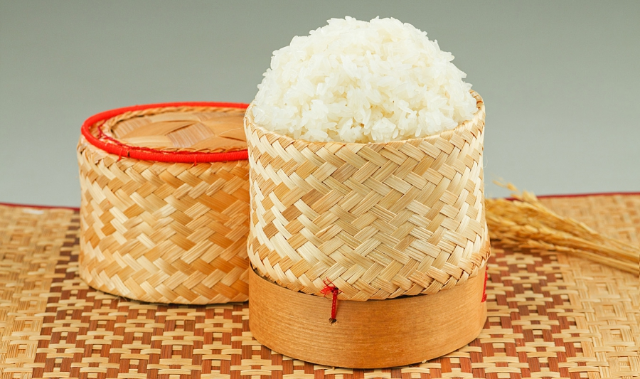

Sticky Rice
This is a recipe for how to make Thai sticky rice. The best way to make it, is to soak raw sticky rice in water overnight, allow it to sit, then steam it for about 15 minutes. You'll have beautiful fluffy and delicious sticky rice.
Ingredients
- water to soak rice
- 1 kg. sticky rice (or however much you want to make)
Instructions
- The night before you want to cook sticky rice, take your raw sticky rice, place it into a bowl or plastic tub, submerge in water, and allow to soak room temperature overnight. Alternatively, you can soak for at least 4 - 5 hours, but overnight is best.
- Take the sticky rice out of the water (and the grains should be softer and a little swollen), and place into a bamboo steamer, or any type of steamer. Cover the steamer with either a lid, or you can do what I did and cover the basket with a cloth, then a metal lid - just to keep all the steam within the rice.
- Add water to a pot with the steamer over the pot (just make sure the water doesn’t touch the sticky rice), and once the water comes to a boil, steam for 15 - 20 minutes (usually 15 minutes for me is perfect) on a medium heat.
- After 15 minutes take off the lid carefully, because it will be very hot, and just grab a taste test of the sticky rice to make sure it’s soft and fluffy. If it’s still a little crunchy, steam for a few more minutes, but if it’s good to go, turn off the heat and either eat immediately, or transfer to some sort of airtight container or basket to hold until you’re ready to eat.
- Enjoy Thai sticky rice while it's hot and fresh.

All Rights Reserved